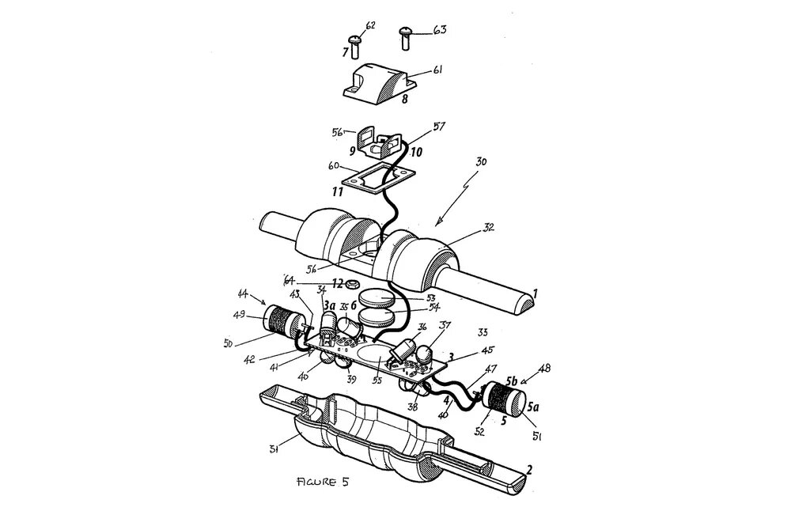
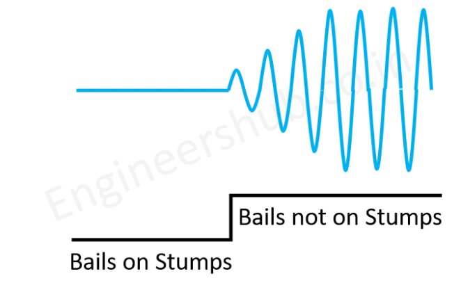
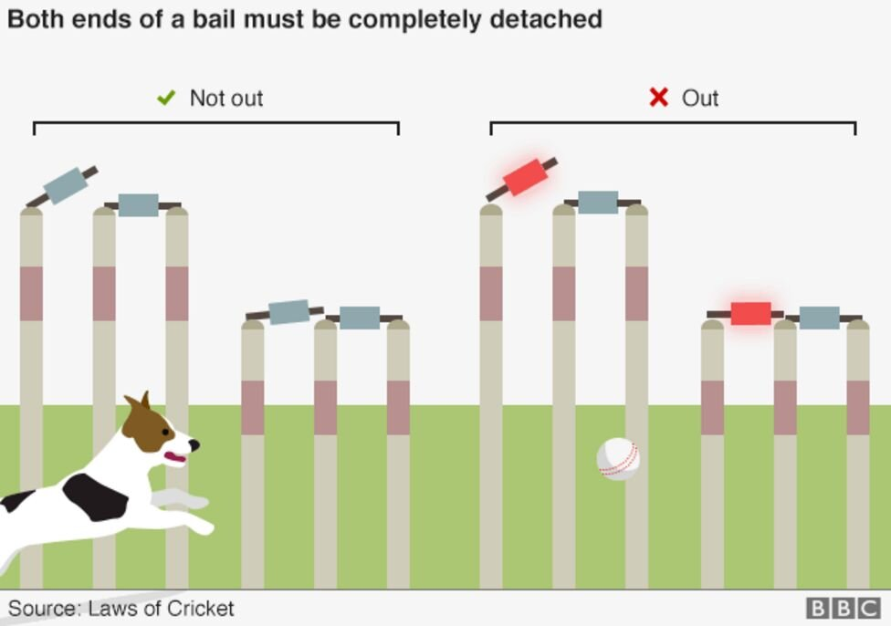

Everyone who watches a cricket match has seen that for several years now, a red light is lit from the wickets, that is, from the stumps and from the balls. This system is a newly introduced technology in cricket and it is called LED Wickets system. But this is known worldwide as Zing Cricket Wicket.
It is mentioned in some posts on social media that even a thoran maker living in Sri Lanka is capable of making these wickets, and it will cost them a very small amount like 1,500 rupees. Actually LED Wicket system cost to produce such a small amount?
First of all let's see what this LED Wicket System or Zing Cricket Wicket is.
Why an LED Wicket System?
Before we discuss the technical side here, let's discuss the reasons for developing such a system.
We are right if we say that cricket is a popular sport in many countries including Sri Lanka, India, England, New Zealand, South Africa, Australia, West Indies, Pakistan and many other countries. Run-out and stumping are two of the most common ways in which batsmen are dismissed in cricket.
How is a stumping properly a dismissal? If anyone asks, according to the rules and regulations of cricket, the balls in the wicket should fall from both the ends where it is held. In a run-out, the other team has the ability to convert the ball into a run-out by breaking the wicket before crossing the defensive line while running from one end of the field to the other.
But in order for it to be recorded as a true run out, the bales held on top of the wicket had to fall from both ends of the wicket, but in some cases it could not be observed properly, and sometimes even in cases where the bales fell from only one end, it was reported as a run out. And in some cases, the loss of bales from one end before the player crossed the protective boundary and even after the other end passed the protective boundary, there were cases where it was reported as a dismissal.
Due to such incidents of giving decisions as dismissals in cases where there is no dismissal and decisions as dismissals in cases of dismissals, there has been a strong need and need to avoid such mistakes in international and league cricket tournaments.
Zings company has managed to provide the complete solution for this with the introduction of lighted bales and wicket innings along with the proper departure of the balls from the wicket.
Who introduced the LED Wickets System?
Bronte Eckermann, an Australian engineer, is the one who introduced this latest ZIng Bails technology to the world of cricket. He got the idea for this after his daughter was playing with her toys when she saw a real LED bulb in one of the toys. With that, the idea that came to his mind was to light the LED bulbs when the bales are properly removed from the wicket. Bronte Eckermann is the director of Zing International, an Australian company that developed the Zing Wicket system.
How does this LED Wickets system work?
These new bales are powered by low voltage batteries. Each of these bales is equipped with a microprocessor to detect it when it falls from the steps of the stump. How it works is that when the bales fall from the stump, it takes a very short time like 1 in 1000th of a second to light the bulbs.

The photo above shows a cross section of the bales produced by Zing International and the parts it contains. We will not wait to discuss everything in it here, but parts 44 and 48 shown above show a part of the Oscillator circuit in Bales. A very strong electromagnetic field is produced through this oscillator circuit.
A section of iron is used in the places where the bales are attached to the gates, and after the bales are placed on it, the electric current flows through it. Through that, the electromagnetic field created by the Oscillator circuit in the bales is put to sleep. When the bales are removed from the stump, the aforementioned electric current is disconnected and the amplitude of the Oscillator circuit is activated and the electromagnetic field generated through it is detected, and the switch for lighting the LED bulbs in the bales is activated. This takes as little as 1 millisecond. Below is how the amplitude of the Oscillator circuit is generated.

As we have discussed at the beginning of this article, according to the rules of cricket, the batsman is considered to be out after both ends of the balls have been removed from the wicket. (One of the two bales) In the LED Wicket system, if both ends of a bale are not removed from the wicket, the LED bulbs will not light up. It is possible to accurately identify whether a batsman is actually out or not. You will be able to understand this more clearly by looking at the photo below.

The LED Wicket system, or the technology used in the Zings Wicket system is like that. However, the next problem arose in creating gates using this techniqueWhat are the ingredients used for this? Before this technique was used, wood was the raw material used to create wickets and bales.
The Zing Wicket system uses a plastic composite material that houses the circuits used and is capable of withstanding the force of a 160 km/h ball.
The International Cricket Council approved the Zing Wicket in 2013 and it was first used in an international match during the Twenty20 World Cup in Bangladesh. Before that, the International Cricket Council used it for the Big Bash League tournament in Australia and conducted tests.
Due to the Zings Wicket system, it has now been possible to correctly judge a run out or a wicket break, so it has been possible to engage in a fair game.
Sources: Android Wadakarayo